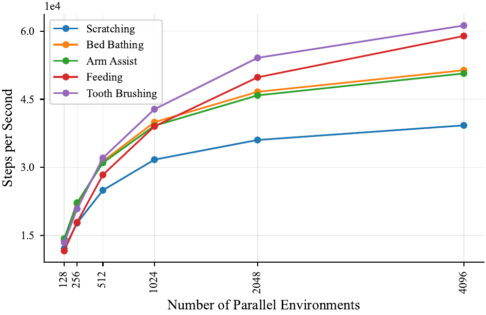
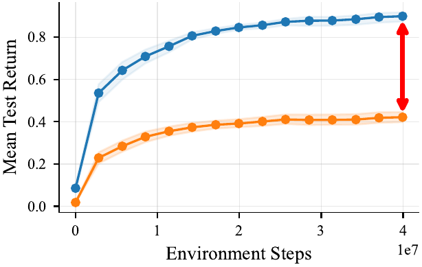
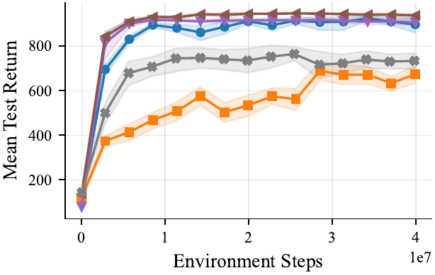
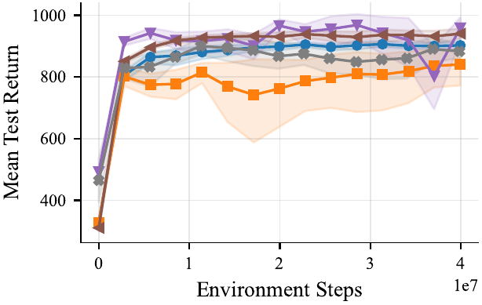
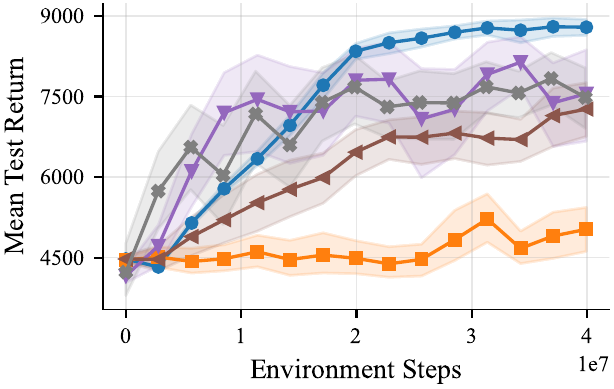
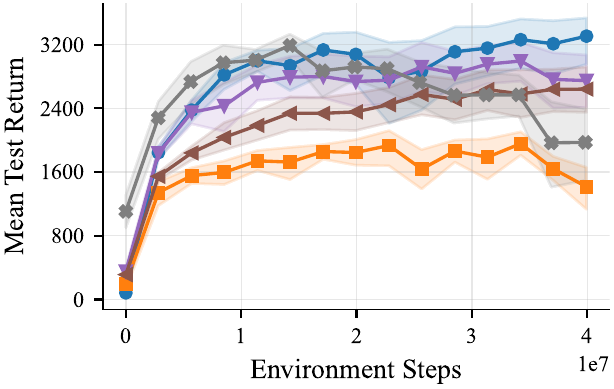
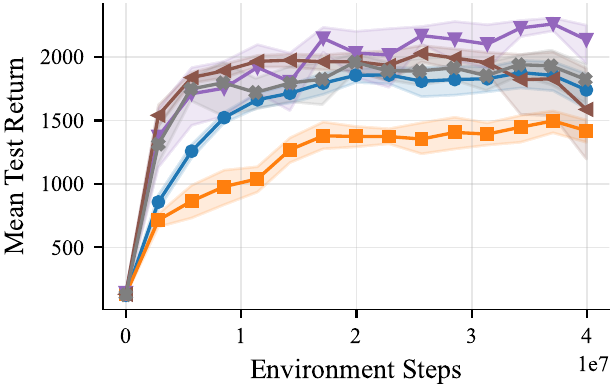
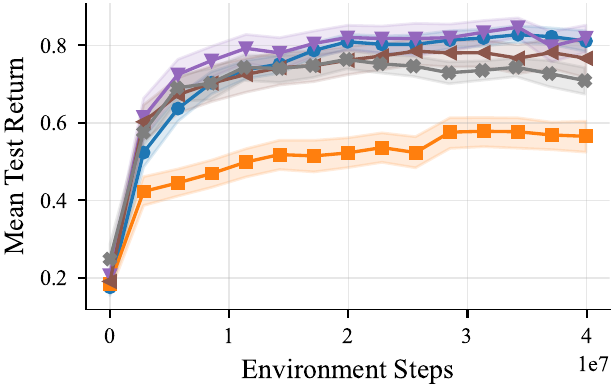
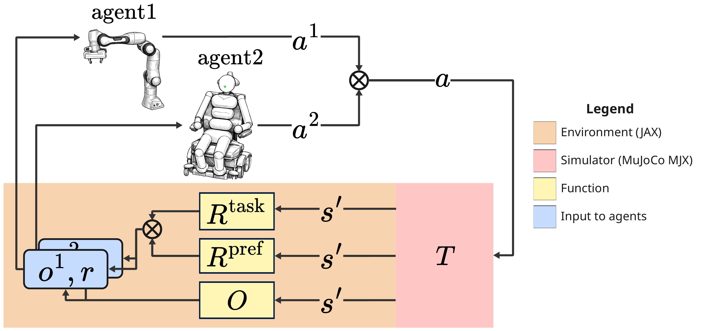
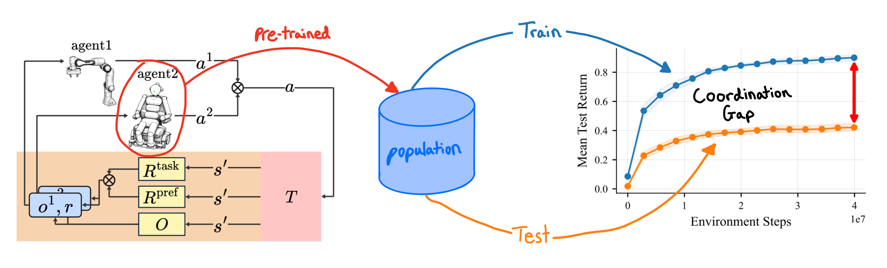

Abstract
Real-world assistive tasks — home assistance, caretaking, daily-living support — are inherently multi-agent, yet most existing reinforcement learning (RL) and robot learning simulators consider single-agent problems. This gap is compounded by two further limitations: common RL environments are too simple to capture the complexity of real robotics domains, while most robotics simulations have throughput too low for RL training. As a result, environments that combine robotics fidelity, training efficiency, and multi-agent support remain rare. Assistax closes this gap with a high-throughput, GPU-accelerated suite of assistive robotics tasks built on JAX and MuJoCo MJX, and pairs each robot with an active humanoid partner that can be co-trained via multi-agent RL (MARL).
On top of the MARL benchmark we formulate assistive tasks as an Ad-Hoc Teamwork (AHT) problem: the robot must generalise to unseen humans with varying disabilities and preferences. We provide tuned MARL baselines, an AHT pipeline with a diverse population of pre-trained humanoid partners (released on Hugging Face), and an evaluation protocol that reveals a clear coordination gap when current RL algorithms meet unseen partner agents.
Key Results
Faster open-loop simulation
Versus CPU-based assistive RL environments, on a single GPU. A typical 40M-timestep training run finishes in ~20 minutes instead of ~8.3 hours — a 25× wall-clock reduction.

RL agents fail on unseen partners
Train a robot with 5 humanoid partners, test it against 625 unseen partners with novel preference combinations, and performance drops.

Five Assistive Tasks
Scratch — the robot reaches a target itch location on the humanoid.
Tooth Brushing — coordinated contact while the humanoid holds still and opens the mouth.
Feeding — the robot delivers food to the humanoid's mouth.
Bed Bath — the robot wipes along the humanoid's arm while it lies in bed.
Arm Assist — the robot helps the humanoid lift lift it's arm back onto the bed.
Tuned MARL Baselines

Scratch

Bed Bath

Arm Assist

Feeding

Tooth Brushing

Aggregate (min-max normalised)
We provide well tuned multi-agent RL baselines — IPPO, MAPPO, and MASAC, in feed-forward and recurrent variants — co-trained on every task. All baselines were tuned across 168 hyperparameter combinations per algorithm–task pair (16 seeds, 64 evaluation episodes), the feed-forward IPPO and MAPPO variants consistently come out on top.
Assistax at a Glance

Assistax runs simulation, environment logic, and the RL loop entirely on GPU. Tasks are built in MuJoCo MJX and vectorised across thousands of parallel environments via JAX vmap. We also provide further vectorization allowing practitioners to scale their experiments across different seeds or across multiple partner agents for ad-hoc teamwork. Each task pairs a Franka arm with an actively-controlled humanoid; rewards combine task success with preference rewards encoding how a partner wants the task performed (e.g. contact force, speed, frequency of contact).
Ad-Hoc Teamwork Pipeline

The same loop is then used to study a harder question: can a robot trained with a handful of partners cooperate with humans it has never seen? We pre-train a diverse population of 630 humanoid partners per task with MARL, varying them along two axes — 610 preference combinations and 7 disability combinations (which joints are usable). The population is then split into a small training set of 5 partners and a held-out test set of 625 partners with novel preference combinations.
A robot policy is trained against only the training partners and evaluated against the held-out test partners. All reactive, pre-trained humanoid policies are released on Hugging Face, so AHT researchers can drop them into their own pipelines without paying the cost of pre-training a partner population from scratch.
BibTeX
@article{hinckeldey2026assistax,
title = {Assistax: A Multi-Agent Hardware-Accelerated Reinforcement Learning Benchmark for Assistive Robotics},
author = {Hinckeldey, Leonard and Fosong, Elliot and Miller, Elle and Rubavicius, Rimvydas
and McInroe, Trevor and Zhang, Fan and Wollstadt, Patricia
and Albrecht, Stefano V. and Ramamoorthy, Subramanian},
journal = {Reinforcement Learning Conference},
year = {2026}
}